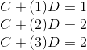
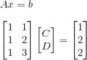
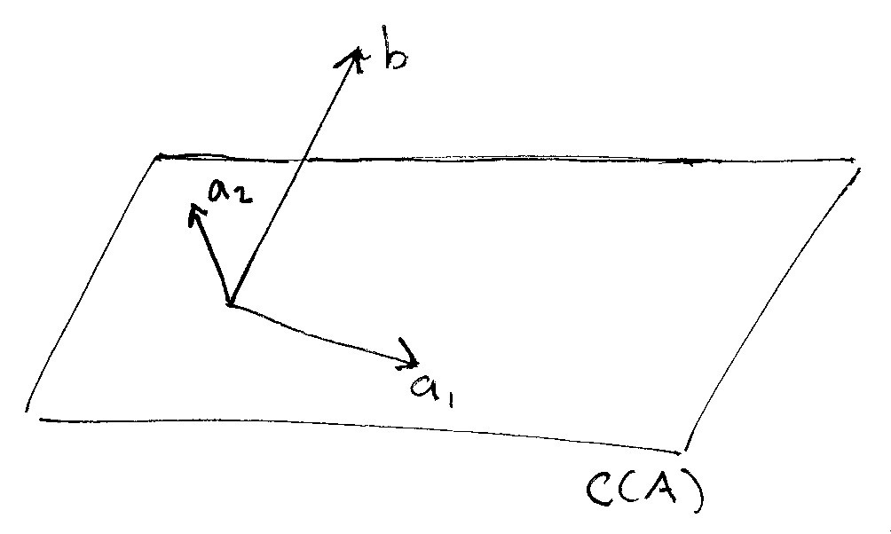
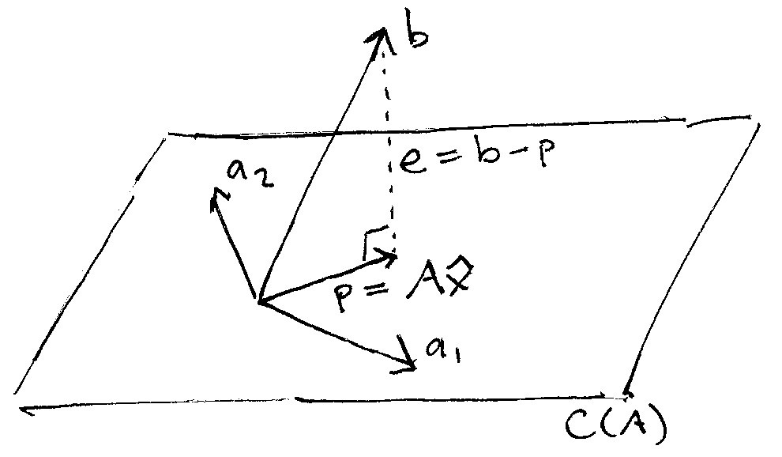
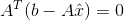
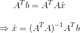

The Linear Algebra View of Least-Squares Regression
Linear regression is the most important statistical tool most people ever learn. However, the way it’s usually taught makes it hard to see the essence of what regression is really doing.
Most courses focus on the “calculus” view. In this view, regression starts with a large algebraic expression for the sum of the squared distances between each observed point and a hypothetical line. The expression is then minimized by taking the first derivative, setting it equal to zero, and doing a ton of algebra until we arrive at our regression coefficients.
Most textbooks walk students through one painful calculation of this, and thereafter rely on statistical packages like R or Stata — practically inviting students to become dependent on software and never develop deep intuition about what’s going on. That’s the way people who don’t really understand math teach regression.
In this post I’ll illustrate a more elegant view of least-squares regression — the so-called “linear algebra” view.
The Problem
The goal of regression is to fit a mathematical model to a set of observed points. Say we’re collecting data on the number of machine failures per day in some factory. Imagine we’ve got three data points: (day, number of failures) (1,1) (2,2) (3,2)
The goal is to find a linear equation that fits these points. We believe there’s an underlying mathematical relationship that maps “days” uniquely to “number of machine failures,” or
in the form
where b is the number of failures per day, x is the day, and C and D are the regression coefficients we’re looking for.
We can write these three data points as a simple linear system like this:

For the first two points the model is a perfect linear system. When x = 1, b = 1; and when x = 2, b = 2. But things go wrong when we reach the third point. When x = 3, b = 2 again, so we already know the three points don’t sit on a line and our model will be an approximation at best.
Now that we have a linear system we’re in the world of linear algebra. That’s good news, since it helps us step back and see the big picture. Rather than hundreds of numbers and algebraic terms, we only have to deal with a few vectors and matrices.
Here’s our linear system in the matrix form Ax = b:

What this is saying is that we hope the vector b lies in the column space of A, C(A). That is, we’re hoping there’s some linear combination of the columns of A that gives us our vector of observed b values.
Unfortunately, we already know b doesn’t fit our model perfectly. That means it’s outside the column space of A. So we can’t simply solve that equation for the vector x.
Let’s look at a picture of what’s going on.
In the drawing below the column space of A is marked C(A). It forms a flat plane in three-space. If we think of the columns of A as vectors a1 and a2, the plane is all possible linear combinations of a1 and a2. These are marked in the picture.

By contrast, the vector of observed values b doesn’t lie in the plane. It sticks up in some direction, marked “b” in the drawing.
The plane C(A) is really just our hoped-for mathematical model. And the errant vector b is our observed data that unfortunately doesn’t fit the model. So what should we do?
The linear regression answer is that we should forget about finding a model that perfectly fits b, and instead swap out b for another vector that’s pretty close to it but that fits our model. Specifically, we want to pick a vector p that’s in the column space of A, but is also as close as possible to b.
The picture below illustrates the process. Think of shining a flashlight down onto b from above. This casts a shadow onto C(A). This is the projection of the vector b onto the column space of A. This projection is labeled p in the drawing.

The line marked e is the “error” between our observed vector b and the projected vector p that we’re planning to use instead. The goal is to choose the vector p to make e as small as possible. That is, we want to minimize the error between the vector p used in the model and the observed vector b.
In the drawing, e is just the observed vector b minus the projection p, or b - p. And the projection itself is just a combination of the columns of A — that’s why it’s in the column space after all — so it’s equal to A times some vector x-hat.
To minimize e, we want to choose a p that’s perpendicular to the error vector e, but points in the same direction as b. In the figure, the intersection between e and p is marked with a 90-degree angle.
The geometry makes it pretty obvious what’s going on. We started with b, which doesn’t fit the model, and then switched to p, which is a pretty good approximation and has the virtue of sitting in the column space of A.
Solving for Regression Coefficients
Since the vector e is perpendicular to the plane of A’s column space, that means the dot product between them must be zero. That is,
But since e = b - p, and p = A times x-hat, we get,

Solving for x-hat, we get

The elements of the vector x-hat are the estimated regression coefficients C and D we’re looking for. They minimize the distance e between the model and the observed data in an elegant way that uses no calculus or explicit algebraic sums.
Here’s an easy way to remember how this works: Doing linear regression is just trying to solve Ax = b. But if any of the observed points in b deviate from the model, A won’t be an invertible matrix. So instead we force it to become invertible by multiplying both sides by the transpose of A. The transpose of A times A will always be square and symmetric, so it’s always invertible. Then we just solve for x-hat.
There are other good things about this view as well. For one, it’s a lot easier to interpret the correlation coefficient r. If our x and y data points are normalized about their means — that is, if we subtract their mean from each observed value — r is just the cosine of the angle between b and the flat plane in the drawing.
Cosine ranges from -1 to 1, just like r. If the regression is perfect, r = 1, which means b lies in the plane. If b lies in the plane, the angle between them is zero, which makes sense since cos 0 = 1. If the regression is terrible, r = 0, and b points perpendicular to the plane. In that case, the angle between them is 90 degrees or pi/2 radians. This makes sense also, since the cos (pi/2) = 0 as well.